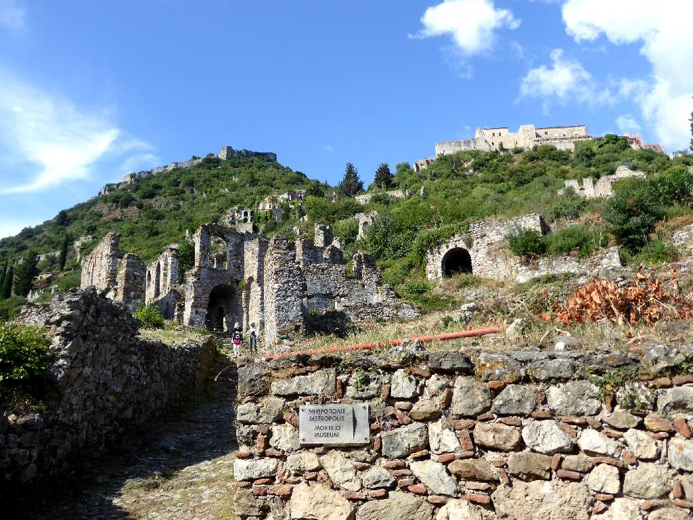
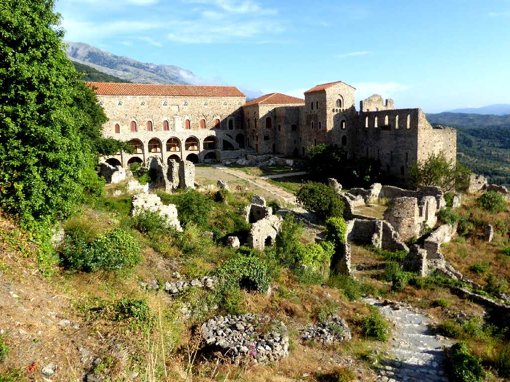
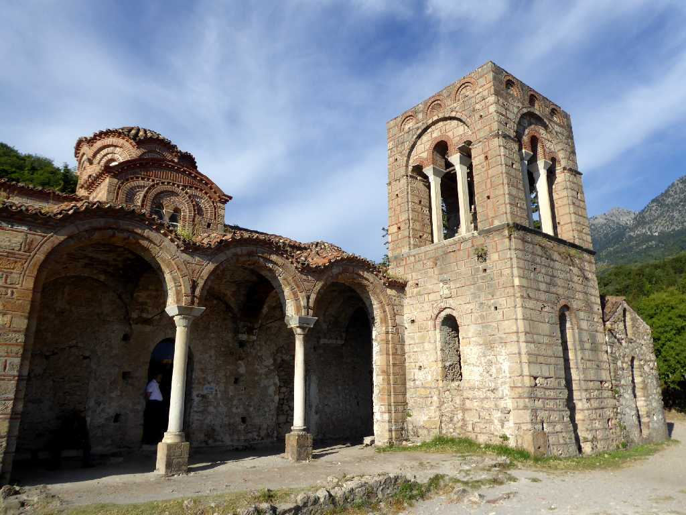
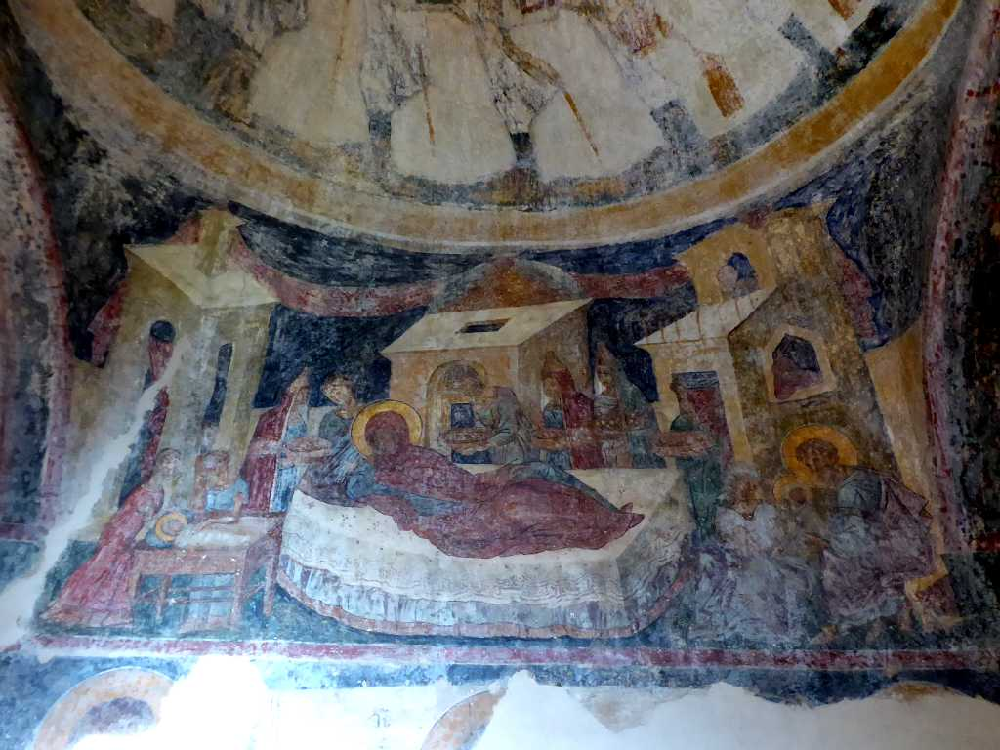
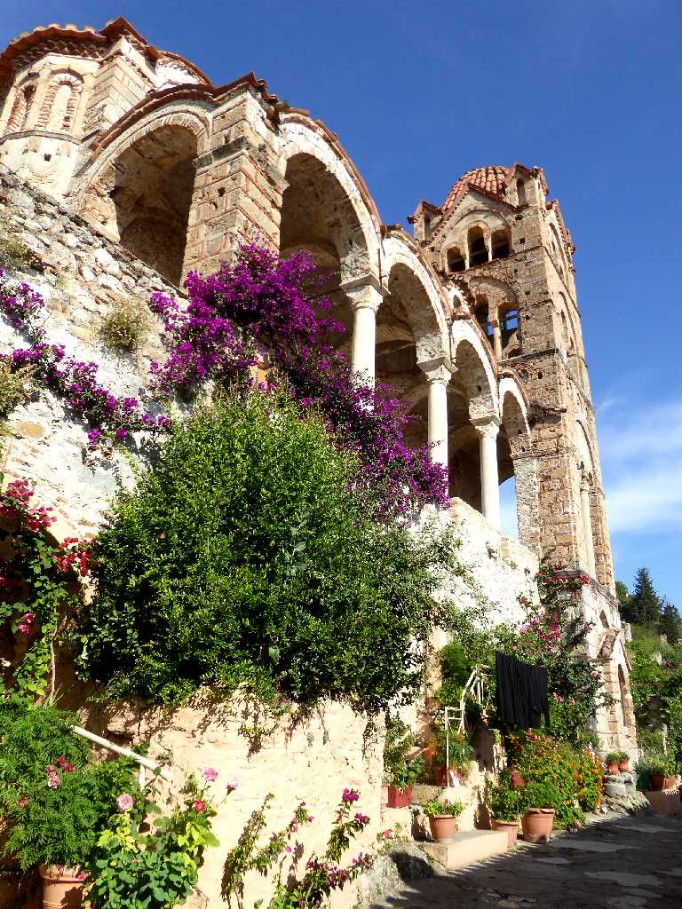
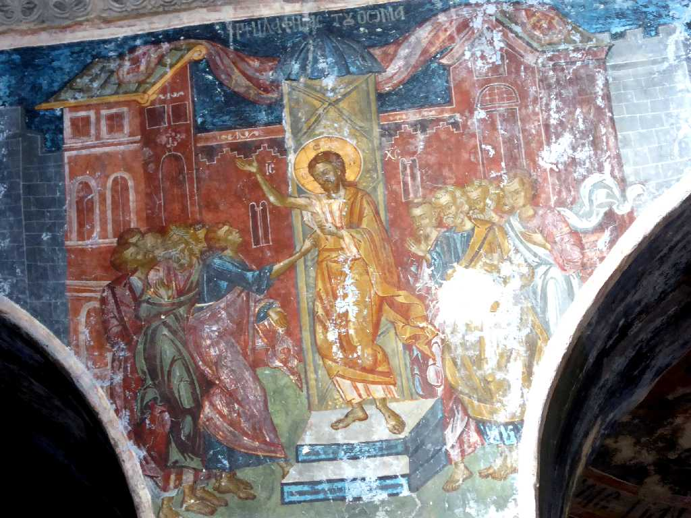
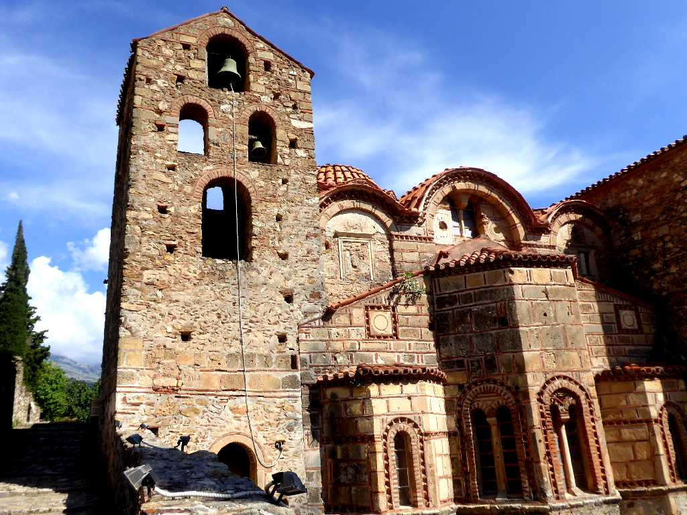
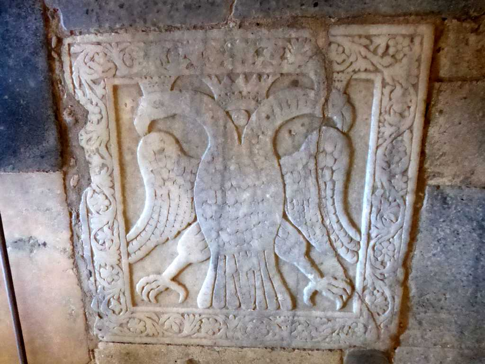
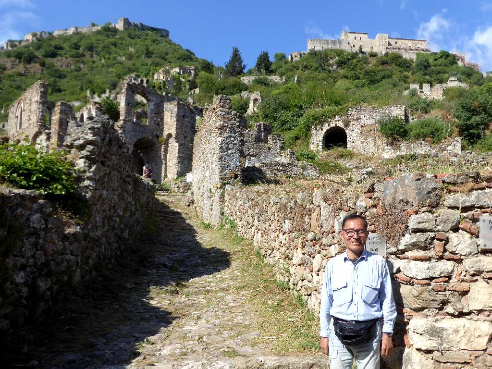

Mystras
ミストラは十字軍のフランク族のギョーム２世が１３世紀初頭に砦を築いたことから始まる

Palace
１３世紀のビザンチン時代にギョーム２世により創られた宮殿

Holy Church of Agia Sophia Mystras
１４世紀に創られたビザンチン様式のアヤソフィヤ教会

Fresco Holy Church of Agia Sophia
聖母マリア誕生のフレスコ画

Pantanassa Monastery
パンタナッサ修道院は１５世紀に創られた聖母マリアを祀った尼僧院

Fresco Pantanassa Monastery
１５世紀に描かれたフレスコ画はルネサンスの先駆けと云われている

Saint Dimitrios Orthodox Metropolis
ミストラで最も上位に位置する府主教座が置かれていたディミトリオス正教会

Relief Saint Dimitrios Orthodox Metropolis
ビザンチン帝国の国章である双頭の鷲のレリーフ

June 17 2018 Mystras